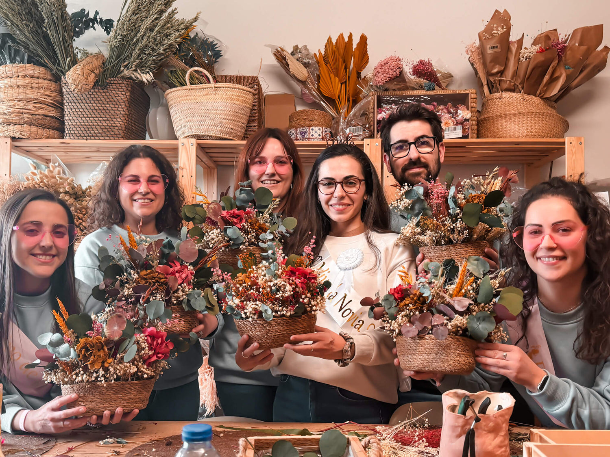
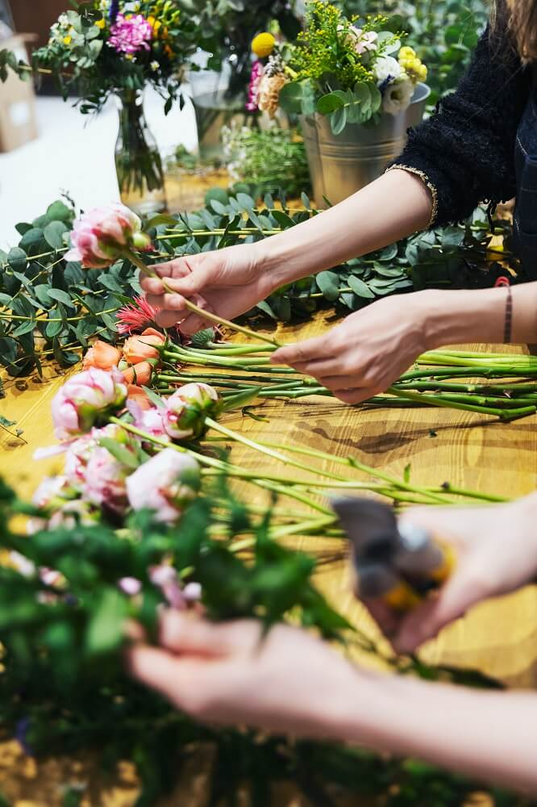
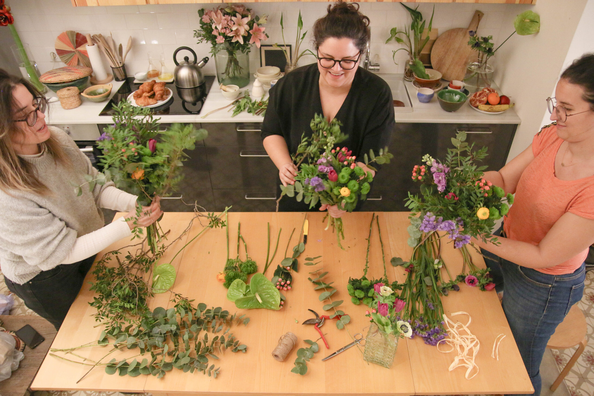
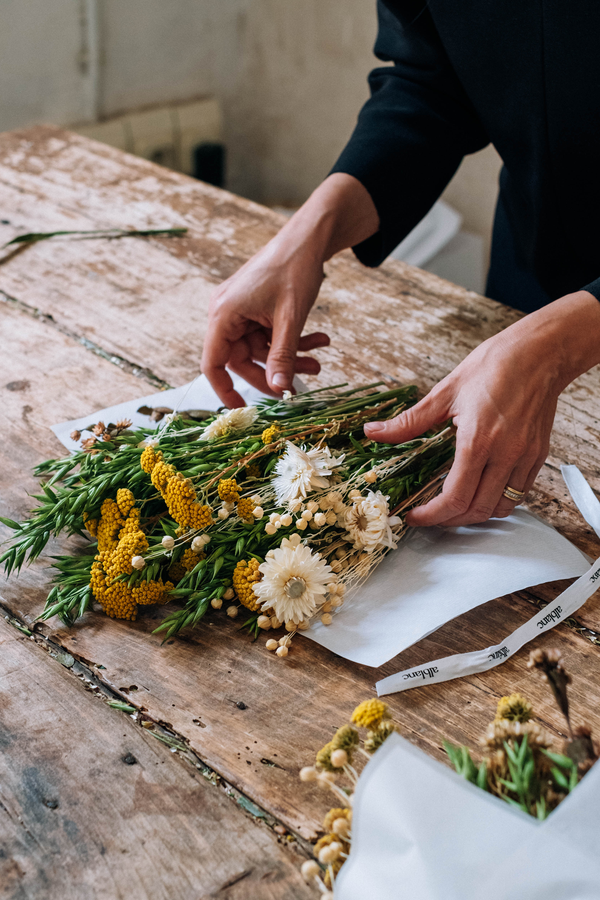

<section class="nosotras-section">


    <div class="nosotras-content">
        <div class="historia-texto">
            <h2>Nuestra Historia: El Corazón de Pétalo&Co</h2>
            <p>Todo comenzó en un pequeño desván, apenas iluminado por la débil luz de una bombilla colgante y el polvo
                danzante en cada rayo de sol. Allí, entre cajas olvidadas y recuerdos empolvados, se encontraban
                <strong>Elara</strong> y <strong>Sofía</strong>, dos almas gemelas unidas no solo por lazos de amistad,
                sino por una pasión inquebrantable: dar vida a historias a través de sus creaciones.</p>
            <p>Elara, con sus manos hábiles y una mente llena de diseños innovadores, había pasado noches en vela
                perfeccionando cada puntada. Sofía, con una visión empresarial innata y un corazón lleno de empatía,
                siempre soñó con un espacio donde el arte y la comunidad pudieran florecer. Ambas, a pesar de las risas
                y la complicidad, arrastraban el peso de batallas personales silenciosas: Elara, superando una etapa de
                profunda inseguridad creativa; Sofía, levantándose tras un revés personal que casi la lleva a abandonar
                todos sus sueños.</p>
            <p>La idea de Pétalo&Co nació de una necesidad más profunda que la simple ambición: era
                la búsqueda de un propósito, la afirmación de que, incluso después de las tormentas más duras, siempre
                se puede reconstruir. Con ahorros escasos y más dudas que certezas, transformaron el desván en un
                modesto taller. Las primeras ventas eran a amigos y familiares, las noches se alargaban y los fracasos
                eran más frecuentes que los éxitos.</p>
            <p>Hubo días en que el cansancio era una losa, y la tentación de abandonar, una voz susurrante. Un invierno
                especialmente frío, con la calefacción averiada y el dinero justo para comprar materiales, las encontró
                trabajando envueltas en mantas, con los dedos entumecidos pero el espíritu inquebrantable. Se miraban, a
                veces con lágrimas de frustración, pero siempre con una chispa de esperanza. "Recuerda por qué
                empezamos", se decía Sofía a sí misma, mientras Elara apretaba los dientes, negándose a que la
                adversidad apagara su fuego creativo.</p>
            <p>El punto de inflexión no llegó con una gran inversión, sino con la <strong>conexión humana</strong>. Un
                pequeño mercado artesanal, una clienta que lloró al ver el significado detrás de una de sus piezas, un
                mensaje de agradecimiento que llegó en el momento justo en que ambas pensaban tirar la toalla. Fue
                entonces cuando comprendieron que su verdadero valor no residía solo en lo que creaban, sino en la
                <strong>historia y la emoción</strong> que infundían en cada producto y en la comunidad que, poco a
                poco, empezaban a construir a su alrededor.</p>
            <p>Pétalo&Co se convirtió en más que una marca; fue un símbolo de la resiliencia, de la
                belleza que surge de la imperfección y de la fuerza que se encuentra en la unión. Cada hilo tejido, cada
                diseño esbozado, lleva consigo el eco de esas noches en el desván, de las lágrimas y las risas, de la
                convicción de que los sueños, por más frágiles que parezcan, pueden convertirse en algo tangible y
                hermoso.</p>
            <p>Hoy, Pétalo&Co no es solo el fruto de la pasión de Elara y Sofía, sino un testimonio
                viviente de que la perseverancia, la autenticidad y el apoyo mutuo pueden transformar cualquier desván
                polvoriento en un universo de posibilidades. Nosotras somos Elara y Sofía, y esta es nuestra historia:
                una historia de superación, de sueños que se niegan a morir y de la magia de crear con el corazón.</p>
            <p class="quote">"No se trata de dónde empiezas, sino de dónde te atreves a llegar."</p>
        </div>
<!--        aquí ya estaba cansado de contenido dinámico xD-->
        <div class="galeria-taller">
            
            
            
            
            
            
        </div>
    </div>


</section>